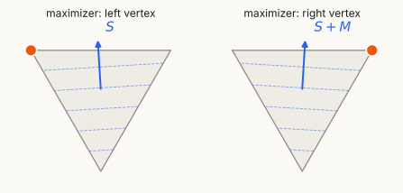
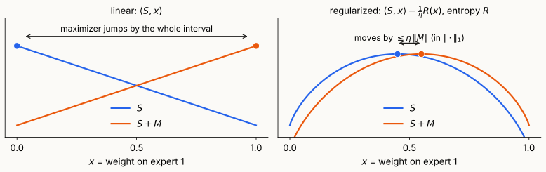
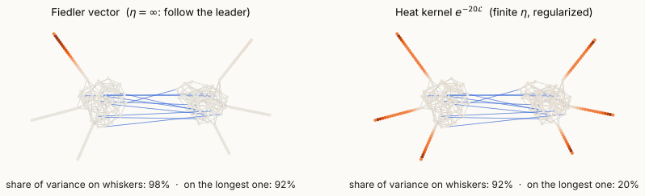

Follow the regularized leader, the matrix multiplicative weights update,
and why recursive eigenvectors follow the leader
Today’s question. How do we bound \(\lambda_{\max}\big(\sum_tM_t\big)\) when the \(M_t\) arrive online? And why does the answer tell us how to find balanced sparse cuts, which Fiedler’s vector cannot?
Two problems of the form “bound \(\lambda_{\max}\) of a sum”:
The obstacle: \(\lambda_{\max}(A)=\max_{\|u\|=1}u^\top Au\) is a max over all directions, and the \(M_t\) may depend on the past.
Online learning replaces the max over all directions by one “probability distribution over directions” \(X_t\), updated each round. If every round is good against \(X_t\), the sum is good against every direction.
Spectraplex. \(\ \Delta_n=\{X\in\mathbb S^n:\ X\succeq0,\ \operatorname{tr}X=1\}\), with \(\langle A,X\rangle=\operatorname{tr}(AX)\).
Online linear optimization over \(\Delta_n\). For \(t=1,\dots,T\):
Regret: with \(S_t=\sum_{s\le t}M_s\), \[\mathrm{Regret}_T=\max_{X\in\Delta_n}\langle S_T,X\rangle-\sum_{t}\langle M_t,X_t\rangle=\lambda_{\max}(S_T)-\sum_t\langle M_t,X_t\rangle .\]
A regret bound is an eigenvalue bound: \(\ \lambda_{\max}\big(\sum_tM_t\big)\le\sum_t\langle M_t,X_t\rangle+\mathrm{Regret}_T\). The right side only involves the scalars \(\langle M_t,X_t\rangle\).
Follow the leader (FTL): \(\ X_t=\arg\max_{X\in\Delta_n}\langle S_{t-1},X\rangle\), i.e. the top eigenvector of the running sum.
Two experts (diagonal \(M_t\)), gains \[(\tfrac12,0),\ (0,1),\ (1,0),\ (0,1),\ (1,0),\ \dots\]
Linear maximizers are unstable. A linear function on a compact convex set is maximized at an extreme point. When the objective is nearly perpendicular to a face, a tiny perturbation moves the maximizer across the whole face (right). On \(\Delta_n\): the top eigenvector of \(S_{t-1}\) jumps when eigenvalues are nearly tied, and the adversary keeps them tied.


For entropy (\(\alpha=\frac1\eta\) w.r.t. \(\|\cdot\|_1\)): \(\ \|X(S+M)-X(S)\|_1\le\eta\,\|M\|\). Small \(\eta\): stable but slow to follow the data. That trade-off is the regret bound.
FTRL. Fix a convex regularizer \(R:\Delta_n\to\mathbb R\) and a step size \(\eta>0\). Play \[X_t=\arg\max_{X\in\Delta_n}\ \Big\{\langle S_{t-1},X\rangle-\tfrac1\eta R(X)\Big\}.\]
For \(X=\sum_kx_ku_ku_k^\top\) and \(f:\mathbb R\to\mathbb R\): \(\ f(X)=\sum_kf(x_k)\,u_ku_k^\top\) (LA Review II).
Von Neumann (negative) entropy and quantum relative entropy on \(\Delta_n\): \[R(X)=\operatorname{tr}X\log X=\sum_kx_k\log x_k,\qquad D(Y\Vert X)=\operatorname{tr}Y(\log Y-\log X).\]
Lemma (Gibbs). For every symmetric \(A\), \[\max_{X\in\Delta_n}\big\{\langle A,X\rangle-\operatorname{tr}X\log X\big\}=\log\operatorname{tr}e^{A},\qquad\text{attained only at}\quad\rho_A=\frac{e^{A}}{\operatorname{tr}e^{A}} .\]
Proof. Let \(Z=\operatorname{tr}e^A\), so \(\log\rho_A=A-(\log Z)I\). For \(X\in\Delta_n\), \(\ \langle A,X\rangle=\operatorname{tr}X\log\rho_A+\log Z\), hence \[\langle A,X\rangle-\operatorname{tr}X\log X=\log Z-\operatorname{tr}X(\log X-\log\rho_A)=\log Z-D(X\Vert\rho_A)\le\log Z,\] with equality iff \(X=\rho_A\) (Klein). \(\square\)
FTRL with \(R(X)=\operatorname{tr}X\log X\), by Gibbs with \(A=\eta S_{t-1}\):
MMWU. \(\displaystyle\ X_t=\frac{\exp(\eta S_{t-1})}{\operatorname{tr}\exp(\eta S_{t-1})},\qquad S_{t-1}=\sum_{s<t}M_s .\)
Value function. \(\displaystyle\ \Psi(S):=\max_{X\in\Delta_n}\Big\{\langle S,X\rangle-\tfrac1\eta\operatorname{tr}X\log X\Big\}=\frac1\eta\log\operatorname{tr}e^{\eta S},\qquad X_t=X(S_{t-1}).\)
Lemma. Let \(R\) be \(\alpha\)-strongly convex on a convex set \(K\) w.r.t. a norm \(\|\cdot\|\): \[R(Y)\ge R(X)+\langle\nabla R(X),Y-X\rangle+\tfrac\alpha2\|Y-X\|^2 .\] Let \(\Psi(S)=\max_{X\in K}\{\langle S,X\rangle-R(X)\}\) with maximizer \(X(S)\). Then, with \(\|\cdot\|_*\) the dual norm, \[\Psi(S+M)\ \le\ \Psi(S)+\langle X(S),M\rangle+\frac1{2\alpha}\|M\|_*^2 .\]
Proof. Let \(X=X(S)\) and \(g(Y)=\langle S,Y\rangle-R(Y)\). Quadratic decay: strong convexity plus first-order optimality, \(\langle S-\nabla R(X),Y-X\rangle\le0\), give for every \(Y\in K\) \[g(Y)\le g(X)+\langle S-\nabla R(X),Y-X\rangle-\tfrac\alpha2\|Y-X\|^2\le\Psi(S)-\tfrac\alpha2\|Y-X\|^2 .\] Conclude with \(Y=X(S+M)\): \[\Psi(S+M)=g(Y)+\langle M,Y \rangle \le \Psi(S)+\langle M,Y\rangle -\tfrac\alpha2\|Y-X\|^2 \\ \le \Psi(S)+\langle M,X\rangle+ \langle M,Y - X\rangle -\tfrac\alpha2\|Y-X\|^2 \\ \le \Psi(S)+\langle M,X\rangle+\max_{r\ge0}\Big\{\|M\|_*\,r-\tfrac\alpha2r^2\Big\}.\ \square\]
Theorem. \(R(X)=\operatorname{tr}X\log X\) is \(1\)-strongly convex on \(\Delta_n\) w.r.t. the trace norm \(\|H\|_1=\sum_k|\lambda_k(H)|\): for \(X\in\Delta_n\) of full rank and \(Y\in\Delta_n\), \[R(Y)\ \ge\ R(X)+\langle\log X+I,\,Y-X\rangle+\tfrac12\|Y-X\|_1^2 .\]
Theorem (MMWU regret). For any symmetric \(M_1,\dots,M_T\) (chosen adaptively), the MMWU plays satisfy \[\lambda_{\max}\Big(\sum_{t=1}^TM_t\Big)\ \le\ \sum_{t=1}^T\langle M_t,X_t\rangle+\frac\eta2\sum_{t=1}^T\|M_t\|^2+\frac{\log n}{\eta}.\]
Proof. Apply the lemma with \(R=\frac1\eta\operatorname{tr}X\log X\), which is \(\frac1\eta\)-strongly convex w.r.t. \(\|\cdot\|_1\): for each \(t\), \[\Psi(S_t)\le\Psi(S_{t-1})+\langle X_t,M_t\rangle+\tfrac\eta2\|M_t\|^2 .\] Sum over \(t\) and use the two facts: \(\ \lambda_{\max}(S_T)\le\Psi(S_T)\ \) and \(\ \Psi(S_0)=\Psi(0)=\frac{\log n}\eta\). \(\square\)
Tuning. If \(\|M_t\|\le\rho\), take \(\eta=\sqrt{2\log n/(T\rho^2)}\): \(\ \mathrm{Regret}_T\le\rho\sqrt{2T\log n}\). Average regret \(\to0\); diagonal case: Hedge’s \(\sqrt{T\log n}\).
Theorem (local-norm MMWU; stated). If \(\eta M_t\preceq I\) for all \(t\), then \[\lambda_{\max}\Big(\sum_tM_t\Big)\ \le\ \sum_t\langle M_t,X_t\rangle+\eta\sum_t\langle M_t^2,X_t\rangle+\frac{\log n}{\eta}.\]
The width \(\rho\) enters linearly, not quadratically. In sparsification \(\rho\approx n\): this is \(n\log n\) vs. \(n^2\log n\) samples. Proof: Lecture 12.
Apply the theorem to \(-M_t\): play \(X_t\propto\exp(-\eta S_{t-1})\), and \[\lambda_{\min}\Big(\sum_tM_t\Big)\ \ge\ \sum_t\langle M_t,X_t\rangle-\frac\eta2\sum_t\|M_t\|^2-\frac{\log n}\eta .\]
If the losses are Laplacians, say \(S_{t-1}=s\,\mathcal L\) with \(\mathcal L=D^{-1/2}LD^{-1/2}\): \[X_t\ \propto\ e^{-\eta s\mathcal L}=D^{1/2}H_{\eta s}D^{-1/2}\qquad(\text{Lecture 2: }H_\tau=e^{-\tau L_{rw}}).\]
Eigenvector \(=\) follow the leader. Heat kernel \(=\) follow the regularized leader.
\(S\) is \(b\)-balanced if \(\ b\,\mathrm{vol}(V)\le\mathrm{vol}(S)\le(1-b)\,\mathrm{vol}(V)\).
Balanced separator (parameters \(b\in(0,\frac12]\), \(\gamma>0\)): either output an \(\Omega(b)\)-balanced \(S\) with \(\Phi(S)=O(\sqrt\gamma)\), or certify that every \(b\)-balanced \(S\) has \(\Phi(S)>\gamma\).

Recursive spectral partitioning. \(U\leftarrow\emptyset\). Repeat: compute the Fiedler vector of \(G[V\setminus U]\) and its sweep cut \(C\); if \(C\) is balanced, output it; otherwise \(U\leftarrow U\cup C\). Stop when \(\mathrm{vol}(U)\ge b\,\mathrm{vol}(V)\) and output \(U\).
On the example (\(b=\frac14\)): rounds 1–3 remove the whiskers of lengths \(22,20,18\) (\(\Phi=0.023,0.026,0.029\)); round 4 finds a balanced cut.
Each round plays the best response to everything removed so far, and the adversary (the graph) answers with the next whisker. Recursive eigenvectors are follow the leader.
Embed \(v_i\in\mathbb R^n\) and minimize the Dirichlet energy: \[\begin{align*} \mathrm{SDP}(b) & :\quad\min\ \frac1{\mathrm{vol}(V)}\sum_{\{i,j\}\in E}w_{ij}\|v_i-v_j\|^2\\ \text{s.t.} & \quad\sum_i\pi_iv_i=0,\\ & \sum_i\pi_i\|v_i\|^2=1,\\ & \underbrace{\|v_i\|^2\le\tfrac1b\ \ \forall i}_{\text{spread}} . \end{align*}\]
An SDP in the Gram matrix \(X_{ij}=\langle v_i,v_j\rangle\): minimize \(\frac{\langle L,X\rangle}{\mathrm{vol}(V)}\) s.t. \(X\pi=0\), \(\langle\Pi,X\rangle=1\), \(X_{ii}\le\frac1b\), \(X\succeq0\).
Cuts are feasible. For \(S\) with \(p=\pi(S)\in[b,\frac12]\): \(v=\frac{\mathbf 1_S-p}{\sqrt{p(1-p)}}\) has \(\max_i\|v_i\|^2=\frac{1-p}p\le\frac1b\) and objective \(\bar\phi(S)\) (Lecture 6). So \(\ \mathrm{SDP}(b)\le\min_{S\ b\text{-bal.}}\bar\phi(S)\le2\min_{S\ b\text{-bal.}}\Phi(S)\).
Drop the spread constraint: the minimum is \(\lambda\) (Lecture 6, \(\ell_2^2\) characterization). A whisker embedding puts all its variance on 5% of the volume, so some \(\|v_i\|^2\gg1/b\).
| recursive eigenvector | MMWU (Orecchia–Sachdeva–Vishnoi 2012) | |
|---|---|---|
| each round plays | eigenvector (\(\eta=\infty\)) | heat kernel (finite \(\eta\)) |
| a violation is handled by | removing the heavy set | penalizing it (adding a loss) |
| rounds | up to \(\Theta(n)\) | \(\mathrm{polylog}(n)\), by the regret bound |
| cost per round | one eigenvector | a few \(e^{-\tau\mathcal L'}v\): \(\tilde O(m)\) via solvers |
| total time | \(\tilde O(mn)\) worst case | \(\tilde O(m)\) |
Next lecture: the primal-dual loop. Each round the heat-kernel embedding is either spread (round it with a sweep) or concentrated on a set (penalize it); the regret bound ends the loop.
Reading: Lecture 10 notes; Arora–Hazan–Kale §§2, 5; Hazan, Ch. 5.
| Object | Definition |
|---|---|
| spectraplex | \(\Delta_n=\{X\succeq0,\ \operatorname{tr}X=1\}\), \(\ \langle A,X\rangle=\operatorname{tr}(AX)\) |
| regret | \(\lambda_{\max}(S_T)-\sum_t\langle M_t,X_t\rangle\), \(\ S_t=\sum_{s\le t}M_s\) |
| FTL / FTRL | \(\arg\max_X\langle S_{t-1},X\rangle\) / \(\arg\max_X\{\langle S_{t-1},X\rangle-\frac1\eta R(X)\}\) |
| entropy, relative entropy | \(R(X)=\operatorname{tr}X\log X\in[-\log n,0]\), \(\ D(Y\Vert X)=\operatorname{tr}Y(\log Y-\log X)\) |
| MMWU | \(X_t=e^{\eta S_{t-1}}/\operatorname{tr}e^{\eta S_{t-1}}\); value \(\Psi(S)=\frac1\eta\log\operatorname{tr}e^{\eta S}\) |
| norms | \(\|H\|_1=\sum_k|\lambda_k(H)|\) (trace), \(\ \|M\|=\max_k|\lambda_k(M)|\) (operator), dual to each other |
| strong convexity | \(R(Y)\ge R(X)+\langle\nabla R(X),Y-X\rangle+\frac\alpha2\|Y-X\|^2\) |
| regret bound | \(\lambda_{\max}(\sum M_t)\le\sum\langle M_t,X_t\rangle+\frac\eta2\sum\|M_t\|^2+\frac{\log n}\eta\) |
| local norms (\(\eta M_t\preceq I\)) | \(\lambda_{\max}(\sum M_t)\le\sum\langle M_t,X_t\rangle+\eta\sum\langle M_t^2,X_t\rangle+\frac{\log n}\eta\) |
| heat kernel | \(e^{-\tau\mathcal L}=D^{1/2}H_\tau D^{-1/2}\), \(\ H_\tau=e^{-\tau L_{rw}}\) |
| \(b\)-balanced | \(b\,\mathrm{vol}(V)\le\mathrm{vol}(S)\le(1-b)\,\mathrm{vol}(V)\) |
| \(\mathrm{SDP}(b)\) | \(\min\frac{\langle L,X\rangle}{\mathrm{vol}(V)}\) s.t. \(X\pi=0\), \(\langle\Pi,X\rangle=1\), \(X_{ii}\le\frac1b\), \(X\succeq0\) |